Mastodon on Course Manager by Skytap
In this course, you will learn how to use Mastodon, a free and open source media platform.
First, we need to provision some infrastructure so we can set up your personal instance of Mastodon. It will take a few minutes, so click here to kick off the setup process before you read on.
Provision infrastructure
Disclaimers
We selected Mastodon for this training demo because it's free and open source, has a variety of community developed software clients, and is cool to play with. But there are a few things you should keep in mind:
- Mastodon is a registered trademark of Mastodon gGmbH.
- Skytap has no affiliation with Mastodon, and does not endorse Mastodon or its products.
- You will be interacting with your own ephemeral training instance of Mastodon. At the end of the training, the instance will be destroyed.
- This training is designed to demonstrate Course Manager's features. In no way is it a comprehensive overview of Mastodon. Some Mastodon features are not available.
Enter your initials here to confirm you have read and understand the disclaimers
Mastodon architecture
- Mastodon is a Ruby on Rails application
- Mastodon can run on standalone servers or a containerized platform like Docker or Kubernetes
- Mastodon data is stored in a PostgreSQL database
Lab architecture
The following course resources are shared with other labs in this course:
- Azure service principal for creating Azure resources
- Azure PostgreSQL flexible server
- Azure storage account (for Terraform state)
- Azure translation account
- Sendgrid API token with permissions to create additional user tokens
The following lab resources are specific to this lab:
- Skytap environment running Mastodon server and client apps in VMs
- PostgreSQL database and user account (on shared Azure server)
- Sendgrid API token with ability to send mail
- Temporary token for Azure translation API
Lab setup process
At the top of this page, you ran a script to provision the infrastructure required for Mastodon. The provision script does the following:
- Verifies the course's shared database server is set up in Azure or provisions a new one if necessary
- Provisions this lab's Mastodon database and DB user account
- Creates a Sendgrid API key so that emails can be sent from the application
- Generates random identifiers for this instance of Mastodon
- Adds the Mastodon server VM to the lab
- Configures and runs the Skytap VMs used by this lab
Why did Skytap select Mastodon for this training demo?
Skytap is a social media company
Mastodon and Skytap are business affiliates
Mastodon is free and open source software
All of the above
Mastodon Installation
In the previous step, we provisioned the infrastructure for your Mastodon instance. Now we need to set up the application.
Click the link to set up the application, and then read on.
Install application
The installation script does the following:
- Configures the Mastodon server settings based on the results of the previous step
- Creates the tables and other database objects required for Mastodon
- Creates and runs the Mastodon server containers
- Creates the initial Mastodon user accounts
Introduction to Mastodon
Mastodon is a social media platform similar to others you may have used. Here's some background information about Mastodon to review while we finish getting things set up:
- In Mastodon, a post is called a toot, or you can also call it a post or status
- A toot can have a maximum of 500 characters
- By default, Mastodon runs as part of the public "fediverse". Community members may run their own instances with their own rules, and users of one instance may interact with users on other instances.
Limited federation mode
For this training, you will be interacting with your own ephemeral instance of Mastodon. The lab instance will run in limited federation mode, which means it is isolated from other Mastodon instances.
Here is some more information about limited federation mode:
- According to Mastodon, limited federation is contrary to their mission of decentralization, but it is available as an installation setting and is widely used.
- Limited federation mode allows you to run a Mastodon instance on the public internet without exposing your content to unauthorized users.
- Limited federation mode can also be used to run Mastodon in an internal network for a company or academic institution.
What is the application framework used to build Mastodon?
Django
Ruby on Rails
ASP.Net
PHP
None of the above
Mastodon Basics
Our server is ready to go! Click the button to access your Mastodon instance.
Launch Mastodon
Sign in to Mastodon
Click the Sign in button and enter your user credentials:
| Username |
%{metadata:mastodon_admin_email} |
| Password |
%{metadata:mastodon_admin_password} |
Generate content
It's lonely here on this empty instance. Click the button to generate some sample content:
You'll notice that some toots in English and others are in Spanish. If you don't speak Spanish, that's OK! Later in the training you'll set up a bot to translate the content into your language.
Generate content
Configure server rules
While the content is being generated, click here to open the server rules interface:
View server rules
Follow these instructions to create a rule:
- Paste the following rule into the server rule box:
Content must be written by the poster OR attributed to the author. AI content is allowed if it clearly indicates its source and has been reviewed by a human.
- Click Add rule
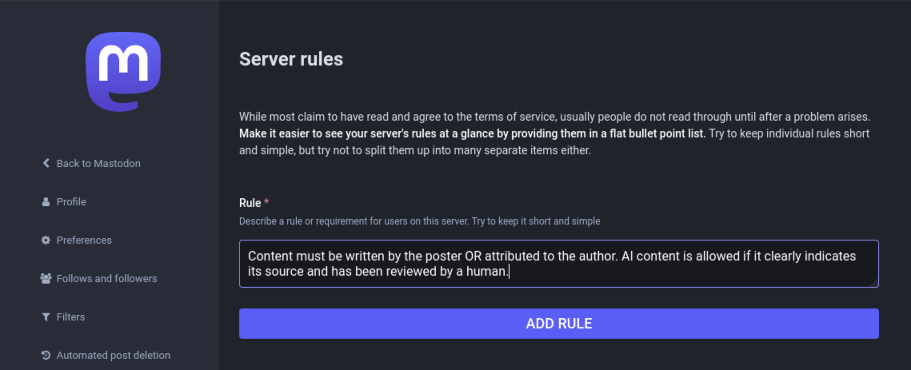
Make your first toot
First, click here to get back to the main local feed:
View main feed
Do the following to create your first toot:
- Type some text into the box at the upper left
- Click Publish
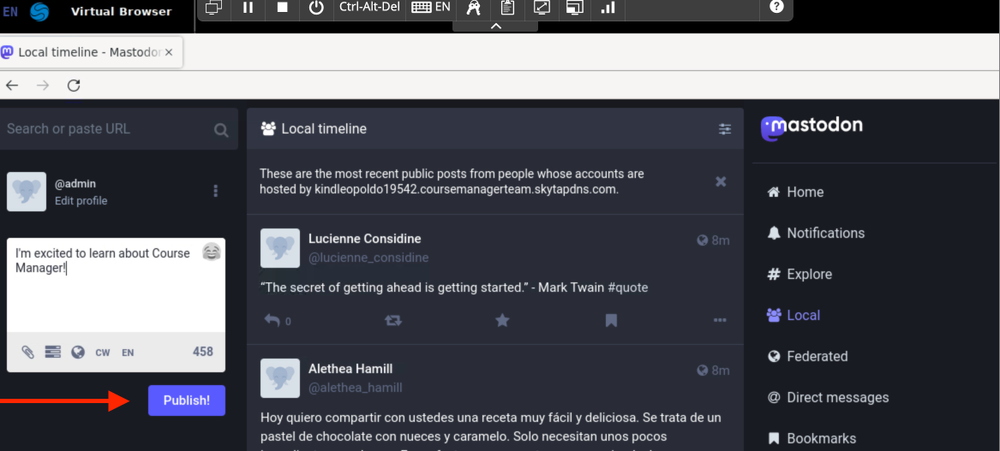
Reply to a toot
Perform the following steps to reply to a toot:
- Click the "Local" link to view the recent toots on this instance.
- Choose a toot and click the arrow icon to reply
- Type your reply and click "Publish"
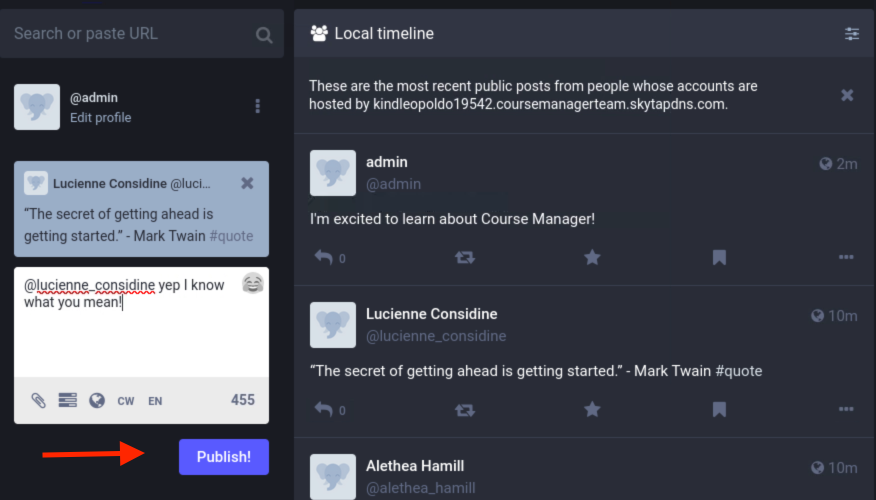
Desktop Clients
Mastodon has a number of community developed desktop clients. In this section, you'll install and use Whalebird, a client for Windows.
Installing Whalebird
Please do the following to install Whalebird on Windows:
- Click the icon in the image below and switch to the VM called Windows Desktop
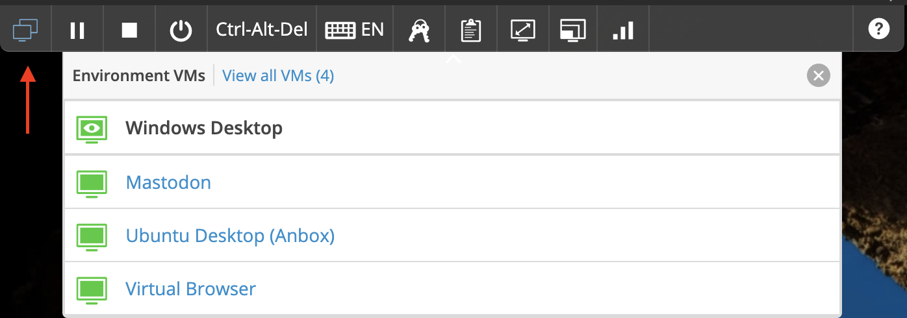
- Log in with the saved credentials
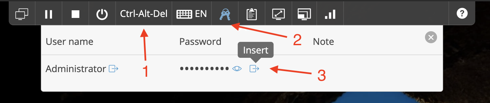
- Once you have logged in, you will see the Whalebird executable on the desktop. Double click the Whalebird executable and click through the prompts to install it. Use the default selections for each prompt.
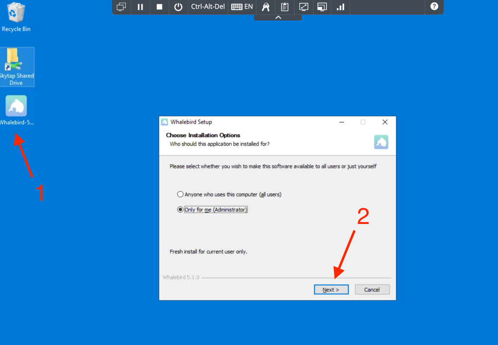
- After the installation completes, launch the application
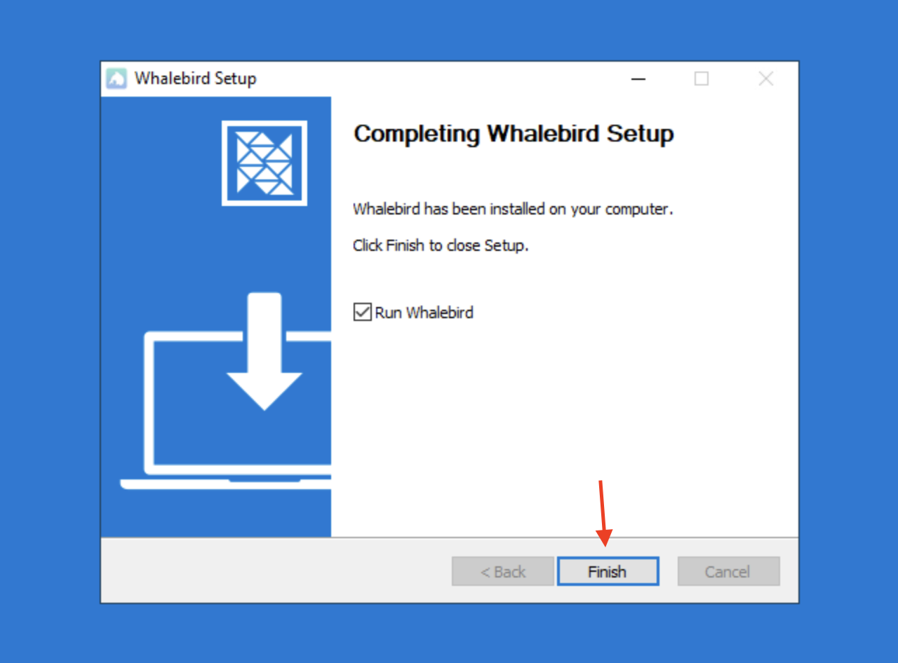
Connect your account to Whalebird
You'll use a different user account for this section than you did in the previous page.
- When you first open Whalebird, you'll be prompted to enter your Mastodon instance URL. Paste the following URL: and then click Search
%{metadata:lab_fqdn}
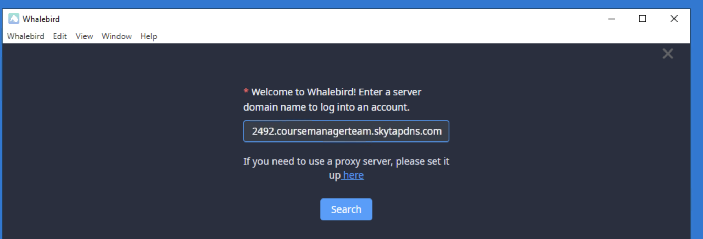
- Click Login and you will be redirected to a browser to log in. Log in with the following credentials:
| Email address |
%{metadata:windows_user_email} |
| Password |
%{metadata:windows_user_password} |
- After you have logged in, click Authorize to connect your account to Whalebird
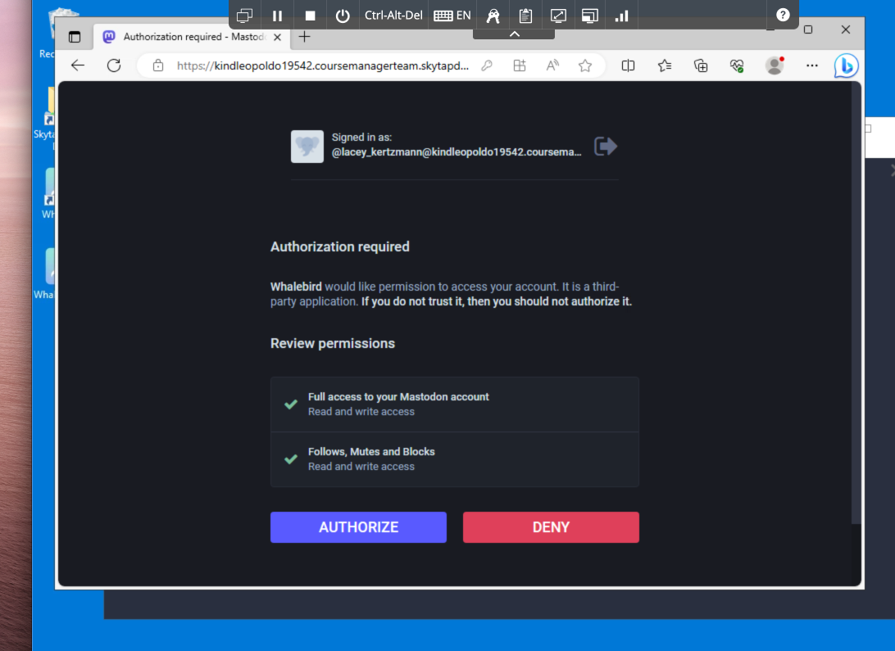
- You will be provided with an authorization code, which you will paste into Whalebird
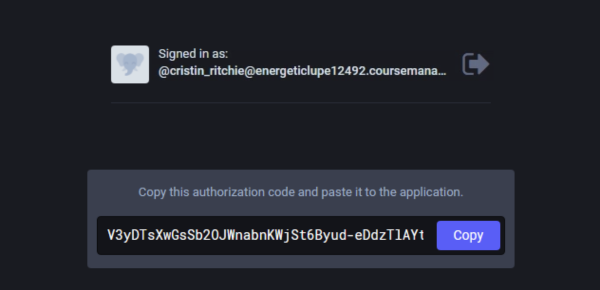
Using Whalebird
- Now that you've logged in, you should see some content. You'll see that Whalebird provides a similar interface to Mastodon's website with many of the same functions.
- Type something into the "What's on your mind" box and click Post to create a toot
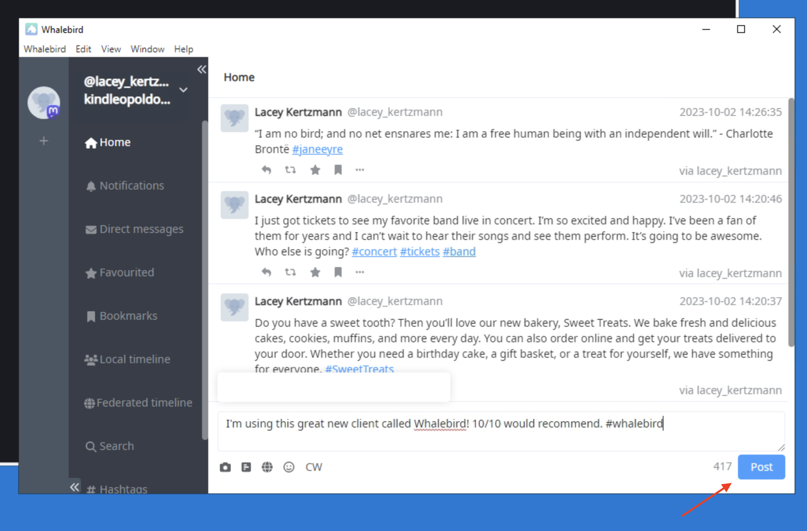
When you are done, click the button to check your work:
Check my work
Another Desktop Client: Sengi for Mac (optional)
This is an optional topic. Click to the next page to skip it.
Sengi is another desktop client in the Mastodon ecosystem. It's available on a variety of platforms. Just for fun, this time we'll try a Mac.
To create the Mac, click on Provision Mac. This will take a few minutes; please wait for the spinner to stop and the green checkmark to appear before continuing. Feel free to move on to the next page and check back.
Once the Mac is provisioned, you can access it by clicking on Access Mac.
Log in as ec2-user with password of Password1!
We've taken the liberty of installing Sengi for you. Launch it from the Finder > Applications and log in with your credentials:
| URL: |
https://%{metadata:lab_fqdn} |
| Username: |
%{metadata:mastodon_admin_email} |
| Password: |
%{metadata:mastodon_admin_password} |
Click around and explore the very different look and feel of this desktop client.
When you're all set, clean up the Mac by clicking on Teardown Mac.
Moderation
To ensure a safe and rewarding experience for everyone, we need to moderate the content users post to our Mastodon server.
Let's see what happens when a user makes posts outside the guidelines.
Troll simulation
First, click the button to set up our "troll" user and have them make some posts.
Generate troll content
Next, click the button to visit the troll's profile and view their posts
View troll user
Reporting a user
The troll user is posting excerpts from Don Quijote by Miguel de Cervantes Saavedra, without attribution to the author. That goes against the terms of service for our site, so let's keep them from posting.
In our example, we are both reporting a user and taking a moderation action against them. In real life, there would typically be a regular user that reports a post, and a separate admin user that performs the moderation action
First, we'll report the user for violating the rules:
- Under the user's post to the right, click the three dots to expand the context menu, then click Report @%{metadata:troll_username}
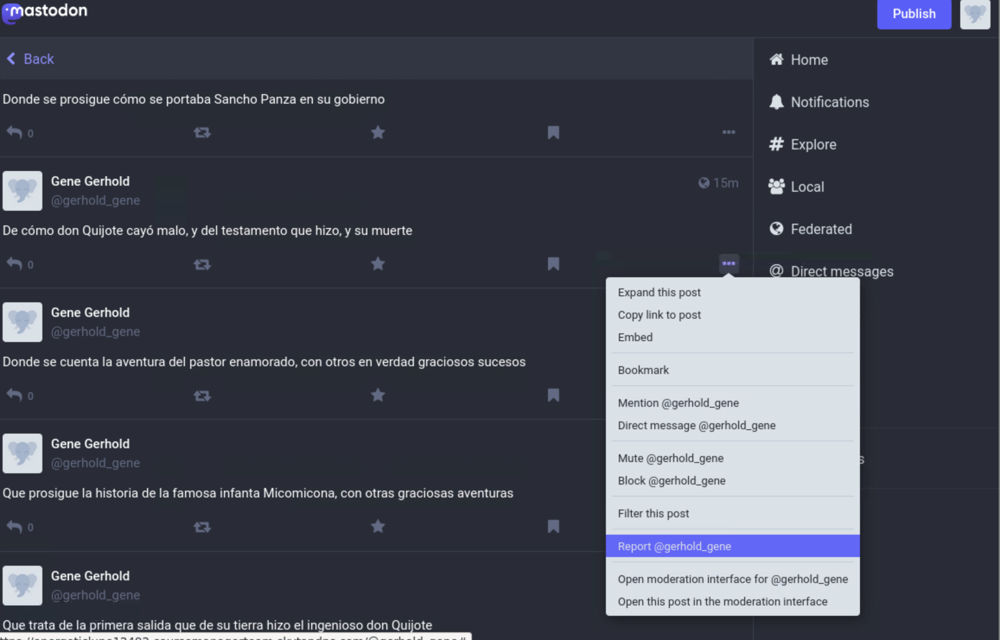
- In the interface, choose Violates rules as the reason for reporting the user.
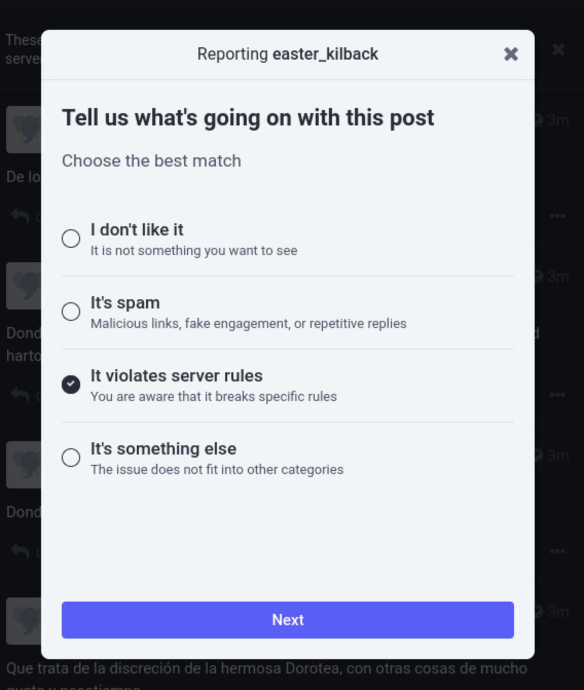
Blocking a user from posting
Now we'll put on our admin hat and deal with the abuse report that was just submitted.
Mastodon provides a few options for preventing a user from posting. For now, we will freeze the user so their posts are still visible but they can't make new posts.
To freeze the user's account, do the following:
- Click Preferences, then Moderation
- In the Moderation menu, you will see a list of users that have been reported. Click below the username to read the report.
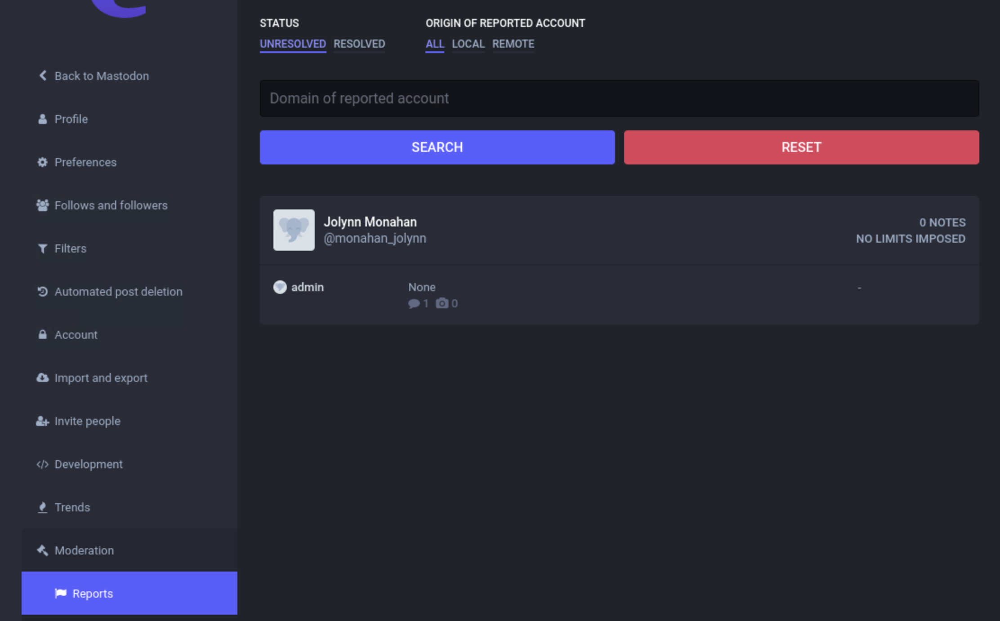
- Scroll down and click Custom, then Freeze. Optionally, add additional information about why you are reporting the user
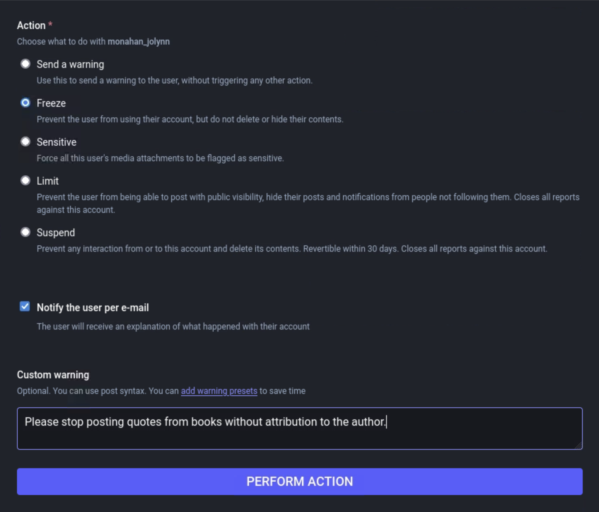
- Click Perform action
Now that the user's account is frozen, they should not be able to post. Click the button to simulate the troll posting again. If you froze them successfully, the script will succeed.
Check your work
Advanced Topics: Translation Bot
This is an optional advanced topic. Click to the next page to skip it.
Mastodon provides both REST and streaming APIs that can be used to develop a variety of bots or integrations.
In this exercise, you will use these APIs, along with a translation API from Azure, to run a bot that will translate Spanish posts to English and vice versa.
Exercise setup
First, you'll need to log into the dev VM. Use the sharing portal options to switch to the VM and log in:
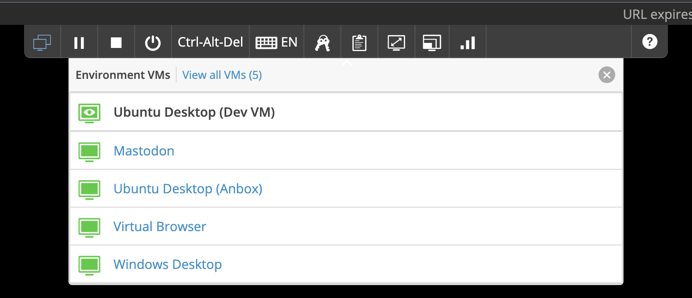
Next, click the button to set up a user account for our bot and an API token to use with Azure's translation services.
This script generates a translation token for your lab that's valid for 10 minutes. You can run the script again to regenerate the token if it expires.
Setup Translator
Write your bot
Now we'll switch to our dev VM. Click the button to switch to the VM and launch Visual Studio Code.
Launch Visual Studio Code
- In the left panel of the code editor, you will see the directory structure.
- In this directory, you will see a file called bot.rb, which contains the ruby code that will run our bot.
- Open the file called .env, which contains the environment variables used to run the bot.
- In the file, paste the following value into the line starting with MAST_FQDN
%{metadata:lab_fqdn}
Generate an API token
Click the button to launch Firefox and open your Mastodon instance:
Launch Firefox
To generate an API token for use with your bot, do the following:
- Enter the credentials for the translator account:
| Username |
translator@bot.fake |
| Password |
%{metadata:translator_password} |
- After you have signed in, click Preferences, then Development, then New application
- Enter anything you like for application name, leave the other settings unchanged, and click Submit
- Copy the token listed under Your access token
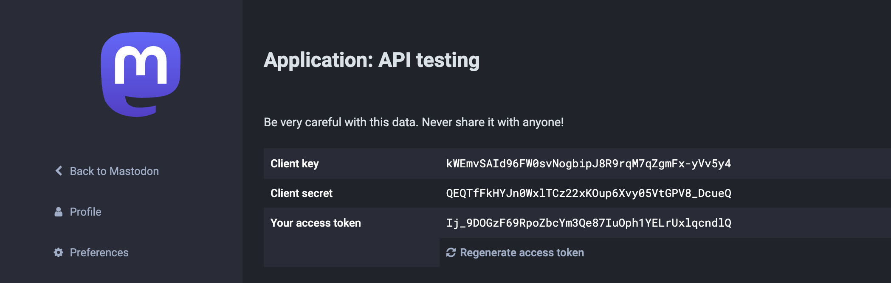
- Click back to VSCode. Paste the token into the .env file in the line starting with MAST_TOKEN
- When you have completed the previous steps, your .env file should look something like this:
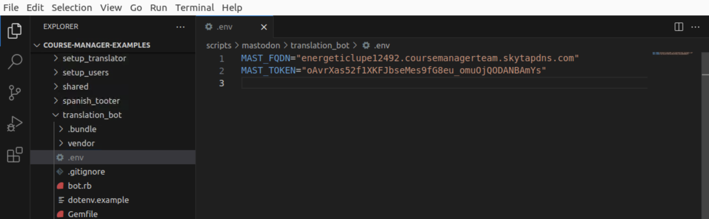
Run the bot
Now that we have configured the bot, it's time to run it.
If this were a real instance of Mastodon, you would want to run the bot as a service or a managed container so it stays up. Since we're just testing it out, we'll run it in a terminal window.
In your VSCode terminal, paste the following command:
bundle exec ruby bot.rb
If we configured everything correctly, the bot will connect to Mastodon and begin to listen for toots.
Test the bot
Click the button to switch back to your browser to test your bot:
Launch Mastodon
You can use the following buttons to toot in English and in Spanish
Toot in Spanish
Toot in English
On your Local feed, you should see the toot appear within a few seconds. If you click on the toot, you should see the translation appear.
You can also make a toot of your own, and see a reply come in with the translation.
Advanced Topics: Admin CLI
This is an optional advanced topic. Click to the next page to skip it.
Most Mastodon administrative functions are performed through the web UI. However, there is also an admin CLI you can run on the Mastodon server, called tootctl
To use tootctl, you'll need to connect to the Mastodon server with SSH.
Click here to start an SSH session
The basic format of a tootctl command is tootctl COMMAND, where COMMAND is one or more words that represent the action you are taking.
In our lab, Mastodon is running in docker, so we'll need to prefix our commands with docker exec, the name of the container, and bundle exec, which loads the runtime dependencies.
Permanently deleting a user
Mastodon's web UI allows you to freeze or suspend a user, but it does not permit you to permanently delete a user from the database.
To delete our troll user's account entirely, type the following command into the SSH terminal:
docker exec web bundle exec tootctl account delete %{metadata:troll_username}
After you have run the command,
try to visit the troll's profile
and verify that it no longer exists.
Written exam
Now that you've completed the training, it's time for the exam. The exam will consist of 5 multiple choice questions and a practical exercise.
Exam setup
Click the button to set up the practical exam, and continue on to complete the multiple choice section.
Practical exam setup
Multiple choice questions
What is a post called in Mastodon?
Tweet
Groan
Roar
Any of the above
None of the above
What does it mean to "freeze" a user account in Mastodon?
The account is permanently deleted
The account and all its associated content are hidden from view
The account cannot create new content
The user receives a shipment of dry ice to their home
None of the above
What is the name of the Windows client you installed earlier?
Windbird
Sailbird
Whaley
Whalebird
None of the above
What is the maximum length of a post on Mastodon?
100 words
250 characters
500 characters
1000 characters
There is no limit
What is the name of the organization that maintains Mastodon?
Mastodon SARL
Mastodon LLC
Meta Platforms, Inc.
Mastodon gGmbH
Mastodon Inc.
None of the above
Practical Exam
When the exam is ready, the button below will become available. Click it to launch Mastodon and start the practical portion of your exam:
Launch Mastodon
Section 1: Toots
Next, complete the following steps
- Log in to Mastodon with these credentials:
| Username |
%{metadata:exam_user_email} |
| Password |
%{metadata:exam_user_password} |
- Create a toot
- Reply to a toot
What is the username of the user whose post you replied to?
Section 2: Moderation
It appears our troll has logged in with a new username. For this part of the exam, you will need to do the following:
- Find the troll's new username
- Report the user for posting spam
- Suspend the user's account
Enter the username of the troll you suspended
Feedback
Thank you for taking our course! We would appreciate it if you'd take a moment to answer these optional questions about the training
On a scale of 1 to 5, 5 being the highest, how would you rate this course?
5
4
3
2
1
Please include any comments you have about the course here